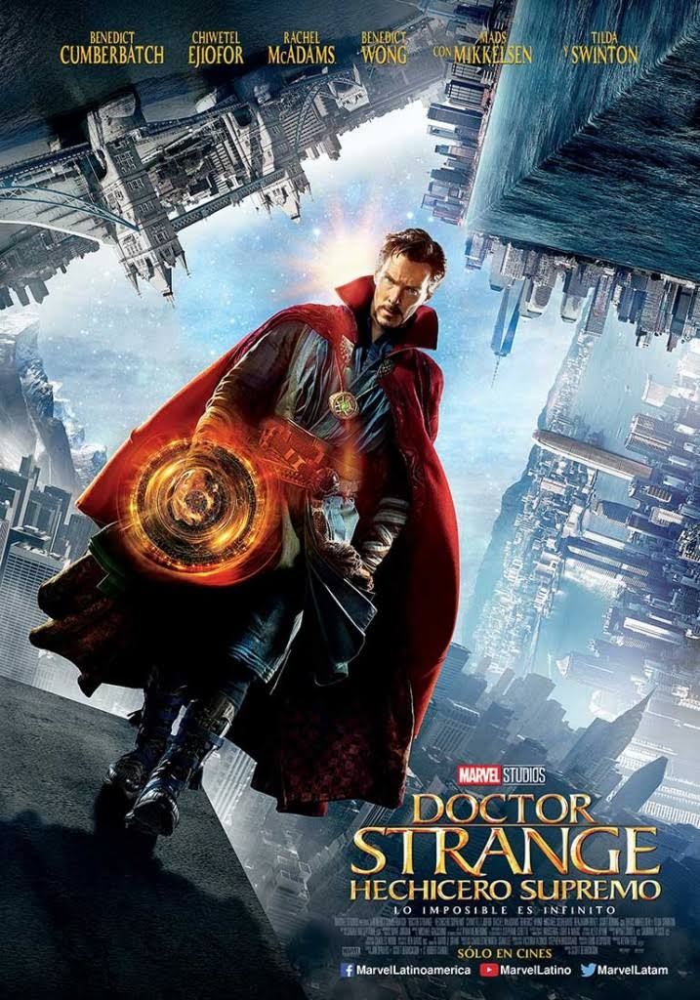
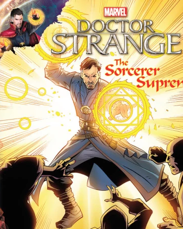

|
18 de Febrero de 2022 |
|
El Doctor Stephen Strange, un neurocirujano muy reconocido, pierde |
 @Juan_00998
@Juan_00998  21:41
21:41 Galeria
|  |  |

|

|

|
|
The Sorcerer Supreme |
Hechicero Supremo |
No way home |
The Avengers |
The Avengers End Game |